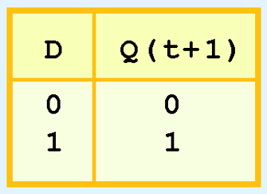

Chapter 3 Sequential Labwork
The biggest thing to note about this section is combinational logic circuits versus sequential logic circuits.
Combinational logic circuits produce a specified output (almost) at the instant when input values are applied. Sort like a GPU for those of you who might know some about it, combinational logic circuits take an input and quickly spit out an output without storing any extra information. A combinational logic circuit doesn't track any sort of state. It merely takes an input and gives an output.
However, sometimes we actually do need to keep track of the current state of our circuit. Based upon its state, the circuit will need to do different things (think a character jumping in a video game. You can't jump again while in a 'falling' state as you could from a 'grounded' right? Same logic applies here). Now then, if only there was a way for our circuits to 'remember' what state they are currently in... Oh wait! That would be sequential logic circuits!
Sequential logic circuits allow us to sequence events based on their state. State changes are controlled by clocks which are a special circuit that sends electrical pulses through a circuit in the form of waveforms as seen below:
State changes occur in sequential circuits only when the clock ticks. Circuits can change state on the rising edge, falling edge, or when the clock pulse reaches its highest voltage.
Circuits that change state on the rising edge, or falling edge of the clock pulse are called edge-triggered.
Circuits that change state when the clock voltage reaches its highest of lowest level is level-triggered.
To retain their state values, sequential circuits rely on feedback. Feedback in digital circuits occurs when an output is looped back to the input. A simple example of this concept is shown below:
If Q is 0, it will always be 0, if it is 1, it will always be 1.
Feedback works by examining the most basic sequential logic components such as the SR flip-flop which stands for Set/Reset. It looks like this:
The C is for the clock in the image below:
The table for it looks like this:
An important thing to note about the SR flip-flop is that it 'remembers' what it was last set to. This is quite a powerful and interesting concept!
However! An issue you've likely spotted is that if both S and R are 1, then the next state of Q is undefined. We have no idea what Q will end up being! If I recall correctly, this is a race condition where the end result is reliant upon the speed at which input resolves. This is terribly unreliable...
Thankfully, the deiities of computing are on our side and have blessed us with the JK Flip-flop! This is simply an SR flip-flop but output will not be undefined for both S and R (or J and K in our case) is 1. By the way, J is our new S and K is our new R! One again, the JK and SR flip-flops are exactly the same except the JK one isn't undefined for when both J and K are 1.
One last modification to the SR flip-flop is the D flip-flop. This one is rather simple! Whatever input D is, the next state of Q will take on the value of D. The output of the D flip-flop remains the same during subsequent clock pulses. The output changes only when the value of D changes! Observe:

And that wraps up the hardest concept of this chapter in my opinion. Mess around with the gates in logisim and you'll be fine.
Question 1
To do this problem, you need to know how to make a Mealy and Moore machine. They look like this:
Moore on the left and Mealy on the right.
Notice, Moore machine outputs at the node itself and takes input along the lines connecting them.
The Mealy machine on the other hand handles both input and output on the connecting lines themselves. The values about the slashes are the input and the values below are the output.
Now for the question itself:
A sequential circuit outputs a '1' on a sequence of 1, 0, 1, otherwise it outputs '0'.
The main dillema with this question is knowing how to draw both a Mealy and a Moore Machine.
a) Draw the Mealy machine that represents this circuit. Be sure to label all nodes and arcs.
b) Draw the Moore machine that represents this. Be sure to label all nodes and arc.
Answers:

Question 2
Do exercise 63.
This exercise is a little extra. The main issue is knowing how to work with a D flip flop and a JK flip flop.
I recommend just recreating it in logisim and then finding the truth table by hand. Here is how I built it:
From there, just click on the clock (the snake looking thing. You can find it under the wiring tab) to see the circuit update.Notice how the D flip-flop and JK flip-flop store their values! The A and B nodes are just outputs. They don't actually do anything. They merely represent the current value of the flip-flops they're connected to.
Here is the resulting truth table:

Question 3
Do exercise 73.
Construct a Moore and Mealy machine that complement their output. Granted I'm not 100% sure what is being asked for here but I'll provide what I believe to be correct.
I'm feeling a little lazy on this one so here's what I submitted the night of the lab:
And We're Done!
That's the bulk of everything. I hope it was helpful.